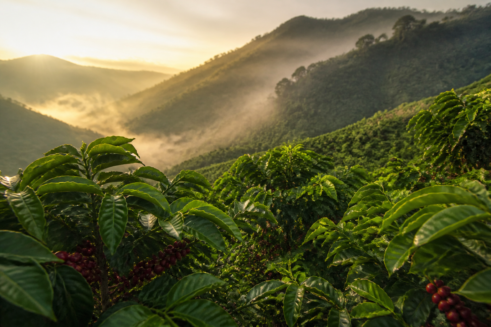

Origen
Cosecha madura, secado lento y lotes separados por parcela. Así conservamos la identidad de cada finca.
Café de especialidad · Sierra Norte
En Origen trabajamos lotes cortos de café mexicano, con trazabilidad desde la finca hasta la taza. Cada tueste busca claridad, dulzor y un perfil honesto del territorio.

Nuestra historia
Colaboramos con familias productoras de la Sierra Norte, donde el café crece entre 1 500 y 1 800 metros de altura. El clima frío, la sombra del bosque y una cosecha selectiva dan granos densos, limpios y con acidez brillante.
No compramos café anónimo. Visitamos las parcelas, pagamos por calidad y tostamos en lotes pequeños para respetar el trabajo de cada cosecha.
Consultar estándares internacionales de caféEl proceso
Cada etapa se cuida a mano: selección en origen, tueste preciso y preparación en barra. El resultado es un café expresivo, sin amargor innecesario ni perfiles artificiales.
Cosecha madura, secado lento y lotes separados por parcela. Así conservamos la identidad de cada finca.
Curvas cortas y controladas para resaltar dulzor, cuerpo y notas florales o cítricas, según la cosecha.
En barra preparamos filtrados y espresso con recetas estables, pensadas para que el café se pruebe con claridad.
Visítanos
Puedes pasar a la tienda, pedir un filtrado de temporada o reservar una mesa para una cata guiada. El cupo es reducido para cuidar el ritmo de cada sesión.
Origen Café
Calle del Mirador 18
Centro, Oaxaca de Juárez
Martes a sábado · 8:00 a 18:00
hola@origencafe.mx